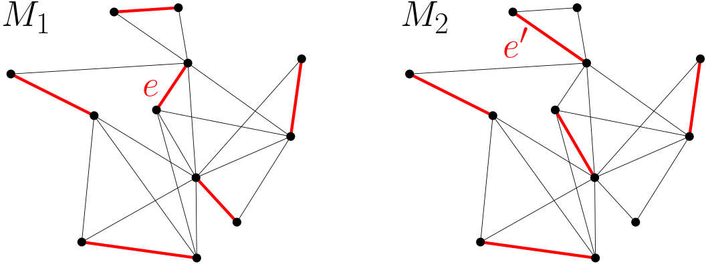
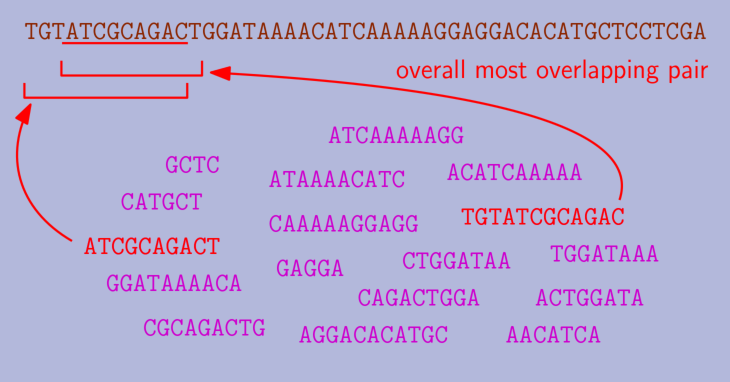

Return to the blog's main page.
Why Many Greedy Algorithms Are Pickier Than They Need To Be
Introduction
The image below shows four problems from completely different domains. A possible solution to each is shown in red.
The solutions in red are not just any solution. They are the results of well known greedy algorithms for each of these problems. Greedy algorithms, soon to be covered in detail, follow intuitive rules: in clustering, cluster together the two closest points. In routing, use the shortest edge in your route. In shorest superstring, combine the two strings that overlap the most. In matching, assign together the worker and task with the cheapest cost.
This article is not about any of these algorithms in particular, but about something they have in common. We will take a look at greedy algorithms like those above and see that it is often possible to design alternative algorithms (what I will call local greedy algorithms below) with "weaker" selection rules that somehow still end up with the same solution. The meaning of this will become clear in time. This observation changed my understanding of greedy algorithms and led to many of the results in my research. I dedicated chapter 2 of my thesis to it. This article presents the main takeaways from that chapter and illustrates them with plenty of examples without getting into the weeds.
Scope: this article is intended for people interested in algorithm design. It only requires a basic understanding of algorithms, as I tried to keep it self-contained except for the references, which can be found in my thesis (Disclaimer: I will shamelessly not include any references here). The article begins explaining greedy algorithms and this idea of "weakening" their selection rules. We will then look at standard greedy algorithms for 6 different problems, analyze their selection rules, and find ways to weaken them. Half-way through, once we have built some intuition, I explain the necessary conditions for this to be possible. Since the greedy algorithms I consider are not new, I will not get into their runtimes or approximation ratios here. This, again, can be found in the references. I hope you find it interesting!
Greedy algorithms
Greedy algorithms are perhaps the most common way to approach optimization problems. They can be used in a broad class of problems where the input is a set of elements which need to be arranged into a solution. The input elements could be nodes in a graph, points in space, strings, tasks to be scheduled… The structure of the solution depends on the problem: perhaps we need to select a subset of the input elements, order them, group them in some fashion… Many optimization problems can be defined by just two things: a criteria that determines what constitutes a valid solution, and an objective function among valid solutions. The goal is to find a valid solution optimizing the objective function.
We focus on problems of this type. A classic example is the maximum-weight matching problem (MWM): Given an undirected graph with weighted edges, find a matching (a pairing of the nodes such that each node is in at most one pair) of maximum weight.
Greedy algorithms are often employed for this kind of combinatorial problems because they have an exponential number of potential solutions. For instance, the number of different subsets of a set of n elements is 2n, while the number of orderings is n!. Thus, brute force search is too expensive.
The greedy approach is to construct a solution one component at a time. At each step, we consider a set of legal choices that allow us to make progress towards a solution. Among those, we choose the one that seems best according to an evaluation function. This function, which the algorithm designer must devise, should evaluate the utility of each choice, i.e., how “desirable” it appears in terms of reaching a good solution. Using the right evaluation function is key for the success of a greedy algorithm. The name greedy comes from the fact that once a choice is made, that choice is permanent; in algorithmic terms, there is no backtracking. Given its nature, a greedy algorithm should only consider “legal” choices in the sense that they should always lead to a final solution that is valid. However, a choice that seem best at an early stage (according to the evaluation function) may turn out to be suboptimal. This is why, in general, greedy algorithms are not guaranteed to find the optimal solution.
In the MWM example, a greedy algorithm constructs a matching one edge at a time. At each step, it chooses the edge with the maximum weight among the valid edges (edges that do not connect already matched nodes). While this greedy algorithm is not optimal, its approximation factor is 1/2, meaning that the weight of the resulting matching is guaranteed to be at least half the weight of the optimal one.
Here is an example execution of the Greedy for MWM in a geometric setting. Nodes are points in the plane and every pair of points is connected by an edge with weight proportional to their proximity (closer nodes have higher weight). The greedy algorithm repeatedly matches the closest available pair.
Local Greedy
As mentioned, only two ingredients are necessary to design a greedy algorithm: a way to construct a valid solution by making a sequence of choices, and an evaluation function to rank the choices at each step.
Using these same two elements, we will design a variant of the greedy strategy that we call local greedy. As in a greedy algorithm, a local greedy algorithm constructs a solution by making an irrevocable choice at each step. However, we relax the condition that we must pick the best choice at each step. In order to define the new criteria for picking a choice, we need one more ingredient: a notion of interaction between the available choices at each step. Two choices can interact in two ways. First, in terms of validity: often, making a choice means that another choice stops being compatible with a valid solution. Second, in terms of utility: making a choice might make another one less or more desirable according to the evaluation function. Since not all pairs of choices necessarily interact, this relationship defines an interaction graph: a graph with the set of valid choices as nodes and where edges represent interaction.
In the greedy for MWM, two edges interact if they share an endpoint, because picking one invalidates the other. For other greedy algorithms, the interactions depend on the problem and the evaluation function.
Given the interaction graph, we can define the local greedy algorithm. For simplicity, assume that there are no ties in the evaluations of the choices. We call the choice with the highest evaluation globally dominant. We call a choice locally dominant if it has a higher evaluation than its neighbors in the interaction graph. Whereas the standard greedy algorithm makes the globally-dominant choice at each step, local greedy makes any of the locally-dominant choices. Note that there is a unique globally-dominant choice, while there can be multiple locally-dominant ones. The globally-dominant choice is also locally dominant, but the converse is not necessarily true. Henceforth, we refer to the standard greedy algorithm as global greedy (GG) to distinguish it from local greedy (LG).
Even if GG and LG operate over the same set of choices and with the same evaluation function, they have two remarkable differences: first, local greedy is non-deterministic. If there are multiple locally-dominant choices, any of them can be chosen. Thus, one can entertain different strategies for finding locally-dominant choices. In fact, GG is one such strategy, so GG is a special case of LG. The second difference, naturally, is its locality: to implement GG, one needs to know every choice in order to determine the globally-dominant one. In contrast, LG can make a choice while being only aware of its neighbors. The extra freedom and locality are promising angles of attack for the design of algorithms, particularly in distributed and parallelized settings.
We can turn the Greedy algorithm that we saw for MWM into LG: at each step, choose any edge e={u,v} such that e is heavier than any other edge touching u or v. Repeat until no more edges can be added.
Here is one of the possible runs of local greedy for the geometric version of MWM (the circles pairs are all the options LG can choose):
Global–Local Equivalence
At first glance, LG seems like a downgrade from GG: at best, the choices of LG are as good as those of GG, but they can also be worse (according to the evaluation function). This article is about an observation that was surprising to me: for many greedy algorithms, local greedy produces the same solution as global greedy. (Disclaimer: This is not entirely new, as it was already known for some specific problems, including MWM. However, to my knowledge, it had not been treated as a general phenomenon before my work. See a discussion on related work in my thesis.) We coin the term global–local equivalence (GLE) for greedy algorithms with this property. A consequence of global–local equivalence is that every run of local greedy produces the same solution, the global greedy solution, regardless of the order in which the choices are made.
Not all greedy algorithms exhibit GLE. We will see examples of both and understand the key difference.
Maximum-weight matching
As mentioned, MWM is one of the problems with GLE. Here we can see that even though the orderings differ, the final matching in the previous example is the same:
I claimed I wouldn't get into proofs, but the proof of GLE for the MWM Greedy is really neat and short so I'll just leave it here.
Lemma: Let G be an undirected graph with unique edge weights. Let M1, M2 be any two matchings in G obtained by the local greedy algorithm for MWM. Then, M1=M2.
Proof: Assume, for a contradiction, that M1 differs from M2. Let e be the heaviest edge in one (without loss of generality, M1) but not the other (M2). During the course of the algorithm, every edge is either added to the matching or invalidated because a heavier neighbor was picked. Since e is not in M2, M2 contains a neighbor edge e' of e that is heavier than e (see the figure below). However, e' cannot be in M1 because e is in M1. This contradicts the assumption that e was the heaviest edge in only one of the matchings. ∎

Since any two runs of LG find the same solution, and GG is a special case of LG, it follows that every run of LG finds the same solution as GG.
I'll take a quick detour into the story of GLE for MWM. Before it was discovered, LG was proposed as a "new" algorithm and it was proven that it achieves a 1/2 approximation ratio, just like Greedy (of course, they achieve the same approximation ratio because they find the same solution). A funny thing I found is that there is a paper doing an empirical comparison of the solution quality of different MWM algorithms, and it includes the traditional Greedy and LG as different algorithms. They compared two things mathematically proven to be the same. In the experiment, they actually obtain slightly different results for the two, which must come down to handling ties differently. Had they used consistent tie-breaking rules in both implementations, they would have got the exact same numbers, probably rising some questions. Here is the table from their paper (LG is labeled LAM):
Set Cover
Set cover is another classic NP-complete optimization problem: Given a set U and a collection X of subsets of U with positive weights, find a cover of U of minimum weight. A cover is a subset of X such that every element of U is contained in one of the sets.
Set cover has some important special cases such as vertex cover.
The image below shows a set cover instance: on the left, we have a visual representation of the elements in U and the subsets they belong to. On the middle, the same instance is represented as a bipartite graph where the edges denote that the element belongs to the set. On the left, we have the "interactions" between the sets: two sets interact if they have an element in common.

There is a well known Greedy for set cover which picks one set a time until all the elements are covered. It uses an evaluation function known as cost-per-element. The cost-per-element of a set is the weight of the set divided by the number of still-uncovered elements in it (or infinite, if they are all covered). Greedy always picks the set minimizing the cost-per-element.
To define LG, we need to start with the interactions: two sets interact if they have an element in common because picking one increases the cost-per-element of the other. Based on this, a set is locally dominant if it has a smaller cost-per-element than any other set with an element in common. LG constructs a cover by repeatedly picking a "locally-dominant" until every element is covered.
Again, we have global-local equivalence in Set Cover. That is, GG and LG always end up with the same cover. To prove it, we cannot use the simple argument we saw for MWM. That proof relies on the ability to identify the heaviest edge where two matchings differ. However, the cost-per-element of the sets depend on the current partial solution, so the evaluations evolve over time. This makes it impossible to pinpoint the first discrepancy. I will later talk about how we proved GLE for set cover and other problems with changing evaluations.
Now, let us look at a greedy algorithm without GLE.
Maximum-weight Independent Set
In the Maximum-weight Independent Set (MWIS) problem, we are given an undirected graph with weighted nodes, and the goal is to find an independent set of maximum weight. An independent set is a subset of nodes such that no two nodes in the subset are neighbors.
A Greedy for the unweighted case (all nodes have the same weight) starts with an empty solution and adds nodes to it one by one. Since when we add a node to the solution none of its neighbors can be added in the future, the selection rule is to always pick the node that "invalidates" the fewest neighbors. That is, neighbors not in the solution nor with a neighbor in it.
This intuition can be generalized to the weighted case as follows: the Greedy for the weighted case chooses the node maximizing its weight divided by the number of valid neighbors (including itself).
Thinking in terms of the interaction graph, picking a node changes the evaluation of the nodes at distance 1 (they become invalid) and at distance 2 (their evaluation improves, because they invalidate one fewer neighbors). Thus, we can turn this Greedy into LG: pick any node that has a better evaluation than any other node within distance 2.
However, this local greedy does not necessarily produce the same solution as the Greedy. The next example proves that this Greedy does not have GLE:
The nodes are labeled with their weights. The edges of the graph are shown in black, and the edges of the interaction graph are shown dashed in blue. Below each node, their initial evaluation is shown in red. Initially, the locally-dominant nodes are the ones with weight 5 and 8. GG chooses the node with weight 8 first, and then (after readjusting the evaluations), the node with weight 6. In contrast, LG could start by picking the node with weight 5, resulting in a different final solution, {5, 8}.
I do not mean to imply that LG is not "good" without GLE—only that the solution may differ. In this particular case, even though we do not have GLE, GG and LG guarantee the same approximation ratio. I'll defer to my thesis for more details. Also in my thesis are other Greedys for MWIS that do have GLE, showing that GLE is not only about the problem, but also about the evaluation function.
So when do we have Global–Local Equivalence?
What is the common structure that MWM and set cover have, but MWIS does not? What is the key to GLE?
One of my favorite results from my PhD is that there is a simple rule for when we have GLE: informally, the key is that the evaluation of the choices must stay the same or get worse over the course of the algorithm. In other words, it should never get better. The intuition is that if a choice, say, C, is better than all its neighbors in the interaction graph (what we call locally dominant) and its neighbors can only get worse as a result of other choices made by the algorithm, then C will remain locally dominant until it is eventually picked. Of course, its neighbors won't be picked before C, because they cannot be locally-dominant while C is present. Conversely, if the choices can get better over time, then a neighbor of C could become better than C and C would stop being locally-dominant, and it may end up not being picked.
We were able to capture this intuition in a single theorem, from which all the results we have seen follow:
Theorem 2.9 (page 20). Let h be a deteriorating evaluation function for a combinatorial optimization problem. Then, the global and local greedy algorithms based on h output the same solution.
If it's not clear from the context, "deteriorating" evaluation functions are those where the evaluations of the choices cannot get better. Let's review the examples we have seen:
- Maximum-weight matching: we select edges based on their weights, which do not change until they are picked or become invalid, so the evaluation function is deteriorating.
- Set cover: as sets are added to the solution, the evaluation of the remaining sets stays the same or gets worse because there are fewer remaining elements to cover and their cost-per-element goes up. Thus, the evaluation function is deteriorating.
- Maximum-weight independent set: as nodes are picked, the evaluation of the remaining nodes can go up. For instance, if a node v has a neighbor that is invalidated by another neighbor, the evaluation of v goes up because now v invalidates one fewer neighbor. Thus, the evaluation function is not deteriorating.
I'll omit the proof to avoid getting technical, but I'll recommend it to readers who enjoyed the proof for GLE for the MWM Greedy. It's an elegant argument (in my opinion) that considers a hypothetical hybrid algorithm that starts behaving as LG and at some iteration transitions to GG. We show that no matter where the switch happens, the final result is the same. Since GG and LG are at the two endpoints of this spectrum (GG corresponds to transitioning immediately, and LG corresponds to never transitioning), the theorem follows.
The origin of GLE: Hierarchical Clustering
Hierarchical clustering deals with the organization of data into hierarchies. Given a set of points, we can construct a hierarchy as follows: each point starts as a base cluster (a cluster is a set of points). Then, a hierarchy of clusters is constructed by repeatedly merging the two "closest" clusters into a single one until there is only one cluster left.
A key component of hierarchical clustering is the function used to measure distances between clusters. The image above illustrates the result for a set of points when using the minimum distance among points from different clusters (also known as single linkage) as the cluster-distance metric. Other popular metrics include maximum distance (or complete linkage), and centroid distance (the centroid of a cluster is the point with the average of the coordinates of all the points).
This process is called agglomerative or bottom-up hierarchical clustering (regardless of the cluster-distance metric used). It creates a hierarchy where any two clusters are either nested or disjoint.
Our work on GLE was inspired by previous work on agglomerative hierarchical clustering. A kind of LG was proposed in the 80's as a way to speed up the construction. Instead of always merging the closest pair of clusters, LG merges any two clusters which are closer to each other than to any third cluster, also known as mutual nearest-neighbors (MNN). They discovered that GLE holds for agglomerative hierarchical clustering, but only for some cluster-distance metrics.
For example, we have GLE with single-linkage and complete-linkage, but
not with centroid distance, as shown in the example below. The
hierarchies found by GG and a possible run of LG for the point set on
the left, using centroid distance, differ. The points a and
b are the closest pair, while c and d are
MNN. The centroids of the inner clusters are indicated with red
crosses.
They found that there is no GLE if a new cluster resulting from a merge can be closer to other clusters than both of the original clusters before the merge. For instance, in the example above, the centroid of c and d is closer to b than both c and d. This is why there is no GLE. In contrast, using minimum-distance instead, a new cluster is as far from the other clusters as one of the original clusters were. Thus, we get GLE.
The intuition is the same as we saw for combinatorial optimization problems: if new clusters cannot get closer to other clusters, then the merges done by the algorithm cannot "break" existing mutual nearest-neighbors, and they will eventually be picked. MNN are like locally-dominant pairs of clusters.
Unfortunately, this line of work on GLE died out in the 80's and never branched out beyond hierarchical clustering. In parallel, GLE was discovered for specific combinatorial problems like MWM, but no connection was drawn between the two.
Travelling Salesperson Problem
The Travelling Salesperson Problem (TSP) is a famous NP-complete optimization problems at the root of most routing problems. One of its variants is Euclidean TSP: given a set of points in the plane, find a cycle going through all the points of minimum total length. The points can be seen as cities that must be visited by a salesperson.
Since TSP is computationally hard, a myriad of heuristic approaches have been proposed, including greedy algorithms. For instance, we can start at a random city and always go to the nearest unvisited city.
A greedy algorithm that seems to perform better in practice is the multi-fragment algorithm. Instead of growing the solution linearly, every node starts as a "fragment" of the solution. Then, the multi-fragment algorithm repeatedly finds the two closest fragments and connects them, creating longer fragments. The distance between two fragments, when they consist of more than one node, is the minimum distance between their endpoints. At the end, there is a single path going through every node. Then, the two endpoints are connected, closing the cycle.
Here is an animation of the multi-fragment algorithm. The gray nodes are those that are internal to a fragment and cannot be matched anymore. The closest pair of fragments at each step is highlighted in red.
This algorithm is very reminiscent of agglomerative hierarchical
clustering.
We can say that two fragments are MNN if they are closer to each other
than to any third fragment. Then, we can define a local greedy
alternative algorithm which connects any pair of fragments
which are MNN. Note that when we connect two fragments, the resulting
fragment cannot be closer to a third fragment than either of the
original fragments were. Thus, by a similar argument as we saw for
hierarchical clustering, we have GLE.
Here is an animation of the LG algorithm. The dashed red loops highlight all the MNN that we could connect at each step. One of them is chosen arbitrarily.
The final cycle will be the same regardless of the choices we make:
Shortest Common Superstring
Shortest Common Superstring (SCS) is an optimization problem over strings: given a set of strings, find the shortest string that is a superstring of all of them. A string is a superstring of another if it contains it consecutively, that is, without additional characters intertwined.
One of the killer applications of SCS is DNA sequencing. My (limited) understanding is that biologists have methods to sample short segments of a much longer DNA sequence, but they cannot pinpoint exactly where in the sequence the sample was extracted.
They end up with a big pool of overlapping samples, and SCS is used to try to reconstruct the original sequence from the samples: if the end of a sample has a long matching sequence of characters with the beginning of another sample, it's statistically likely that they come from overlapping sections of the DNA sequence. The shortest common superstring is the string that contains all the samples and finds the most overlaps.
The problem is NP-hard, but some approximation algorithms are known. The most famous is a greedy algorithm simply known as Greedy (in our context, it corresponds to GG). This algorithm maintains a set of strings. Initially, this set is just the input set. Then, it repeatedly takes two strings in the set with the longest overlap and replaces them with the shortest superstring of both. We call this merging two strings. Greedy finishes when there is a single string left, which is returned.

This algorithm is similar to the multi-fragment algorithm for TSP, and, indeed, GLE also holds. Here, LG repeatedly merges any two strings which overlap more with each other than with any third string. It is harder to see, but we proved that the resulting merged strings do not overlap more with other strings than the original strings did before the merge.
Conclusions
I have shown some instances of GLE, but it would be interesting to find more (if someone knows or finds a greedy algorithm that might have GLE, please do reach out!)
I find GLE interesting on its own, but this article left unanswered a central question: once we have established that we have GLE, how do we actually use it to design faster algorithms? I'll leave that for a future entry (or, see the next chapter in my thesis).
One of our results is that you can use GLE to speed up the multi-fragment algorithm for Euclidean TSP from O(n2) (a result from my own advisor 20 years ago) to O(n log n). In other cases, like set cover and the shortest common superstring, we still haven't found a way to implement LG asymptotically faster than GG. However, my research focused on the sequential setting, and I think that GLE has even more potential in distributed and parallel algorithms, which I did not have time to explore much!
Finally, I will mention again that all the references for the problems and algorithms discussed here can be found in my thesis. Many thanks to my colleagues Daniel Frishberg and Pedro Matias, and my advisors Michael Goodrich and David Eppstein, with whom I worked closely developing these ideas.
Return to the blog's main page.